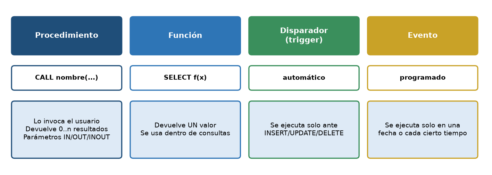
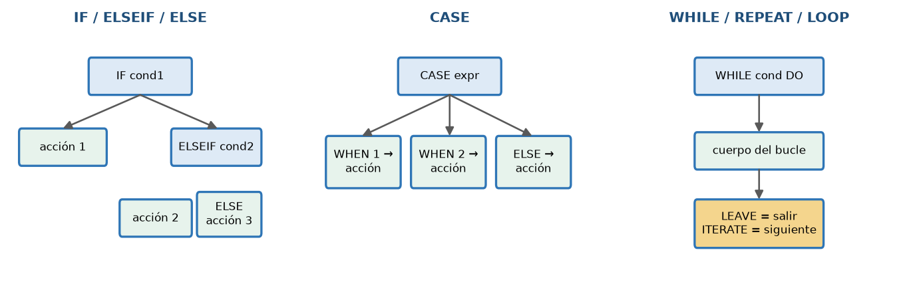
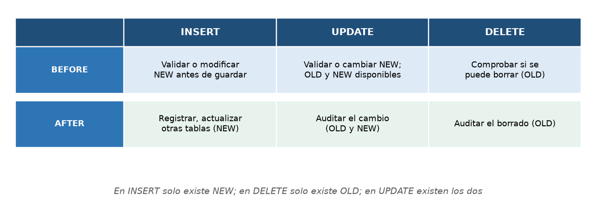
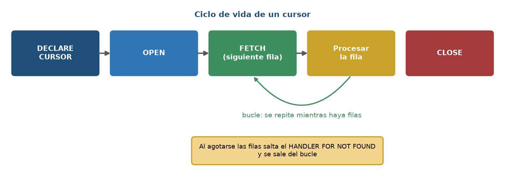
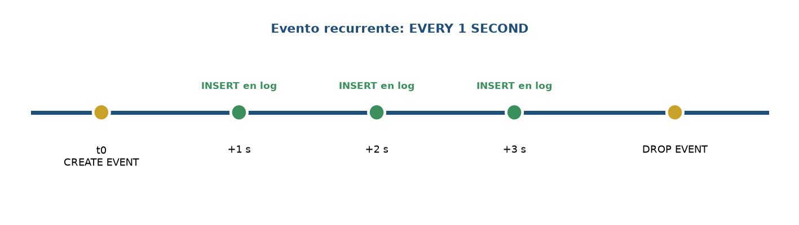

Inicio › UT6
Qué se trabaja
- Funciones y procedimientos almacenados, variables y control de flujo.
- Disparadores, eventos, cursores, manejo de excepciones y gestión de rutinas.
Pruébalo en el laboratorio
UT6 · Disparador de auditoría (SQLite)
Funciones y procedimientos en MySQL
El laboratorio SQLite no tiene rutinas almacenadas. Este código se ha ejecutado en MySQL 8.4; pruébalo en tu Docker:
DELIMITER $$
CREATE FUNCTION fn_descuento(p_importe DECIMAL(10,2)) RETURNS INT DETERMINISTIC
BEGIN
RETURN CASE WHEN p_importe >= 1000 THEN 10 WHEN p_importe >= 500 THEN 5 ELSE 0 END;
END$$
CREATE PROCEDURE sp_resumen_cliente(IN p_id INT, OUT p_pedidos INT, OUT p_gasto DECIMAL(10,2))
BEGIN
SELECT COUNT(DISTINCT p.id_pedido), IFNULL(SUM(l.cantidad * l.precio_unitario), 0)
INTO p_pedidos, p_gasto FROM pedidos p JOIN lineas_pedido l USING (id_pedido) WHERE p.id_cliente = p_id;
END$$
DELIMITER ;SELECT fn_descuento(300) AS d300, fn_descuento(750) AS d750, fn_descuento(1500) AS d1500;
CALL sp_resumen_cliente(1, @n, @g);
SELECT @n AS pedidos, @g AS gasto;▶ Resultado real
+------+------+-------+
| d300 | d750 | d1500 |
+------+------+-------+
| 0 | 5 | 10 |
+------+------+-------+
+---------+-------+
| pedidos | gasto |
+---------+-------+
| 0 | 0.00 |
+---------+-------+Figuras de la unidad




